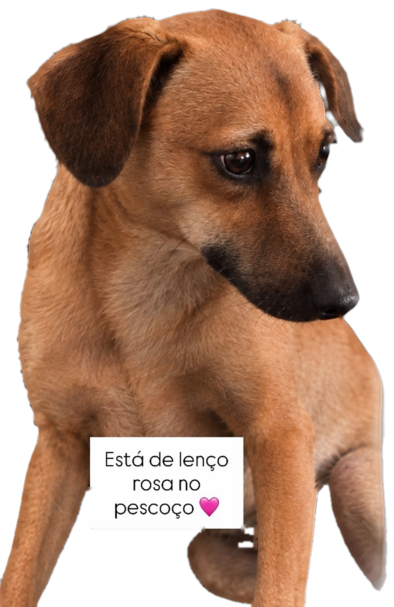

de lenço
rosa no
pescoço
♥
Cachorra
desaparecida
Chiquinha
Ela é companheira de um cãozinho idoso.
Sumiu em 05/10
no
Lucas Araújo.
Rua Minas Gerais, no fim do dia. É castrada, está assustada e pode estar escondida.
Viu a Chiquinha? Chame no direct
@souazoe.pf